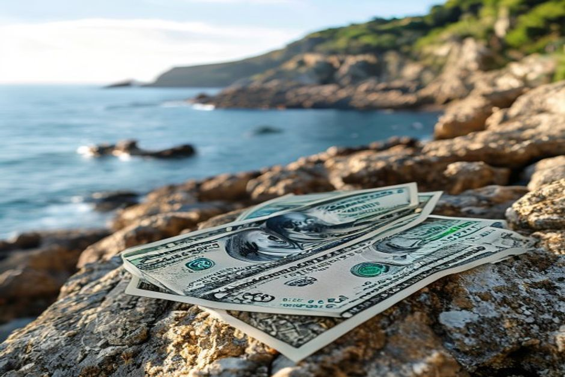

Money in Madeira works almost exactly as it does anywhere else in Portugal — the euro, widespread card payments, and no separate rules to learn. The few things worth knowing before you go are tipping etiquette, where cash still matters, and how to avoid the small fees that catch out first-time visitors.
What currency does Madeira use?
Madeira uses the euro (€), the same currency as mainland Portugal and the rest of the eurozone. Madeira is an autonomous region of Portugal, not a separate country, so there's no local currency, no special exchange rate and nothing to arrange in advance if you're arriving from elsewhere in the eurozone. Visitors from the UK, US or further afield should exchange or withdraw euros as they would for any mainland Portugal trip.

Do you need to tip in Madeira?
No — tipping is never required. Service is included in the bill by Portuguese law, so anything extra is entirely optional. In practice, rounding up the bill or leaving roughly 5–10% for good restaurant service is a common and appreciated gesture, especially in Funchal's more tourist-facing restaurants. Taxi drivers, shop staff and café counters don't expect a tip at all, though rounding up a fare to the nearest euro is normal. On boat trips and guided tours, a small tip for a crew that went out of its way is welcomed but never assumed.
Can you pay by card everywhere in Madeira?
Yes, in almost all restaurants, shops, hotels and activity operators across Funchal and the main tourist areas — card and contactless payment are standard, and many places have moved close to cashless. The exception is smaller, family-run tascas, market stalls around the Mercado dos Lavradores, and rural cafés in villages away from the coast, where a card machine isn't always on hand. Carrying a modest amount of cash covers these gaps without needing to plan around them.
Where do you get cash, and how do you avoid extra fees?
The most reliable option is a Multibanco ATM — Portugal's standard bank network, with machines throughout Funchal and most towns on the island. They typically offer a fairer rate than airport exchange bureaux or currency-exchange kiosks, which almost always charge a worse rate for convenience. The one habit worth adopting at any ATM or card machine: when asked whether to be charged in euros or your home currency, always choose euros. Accepting the "convenience" of your home currency triggers dynamic currency conversion, which quietly applies a worse exchange rate than your own bank would give you.
Is Madeira more expensive than mainland Portugal?
Broadly, no — prices in Madeira sit close to those on mainland Portugal rather than in a different bracket entirely. Because the island imports a large share of its goods by sea and air, packaged and imported items can run a little higher than in Lisbon or Porto. Set against that, locally caught fish, fresh produce, and village tascas away from Funchal's main tourist strip are often better value than the equivalent meal in a mainland city centre — the cost difference has more to do with which street you're on than which island you're on.
What about paying for tours and a private boat trip?
Activity operators in Funchal, including boat charters, are used to card payment and clear upfront pricing, so there's rarely a need to budget extra cash for tours beyond a discretionary tip. Chifbay's private trips from Funchal Marina are priced per boat rather than per person, which tends to work out well for a small group splitting the cost between friends or family rather than paying per-head rates. Current availability and rates for each trip — the Sunset Cruise, the Hidden Coves half-day and the Coastal Discovery full-day — are listed on the experiences page.
Bring a card for almost everything, a little cash for the market stalls, and don't let a machine talk you into paying in the wrong currency.
None of this requires much planning. Madeira runs on the euro like the rest of Portugal, cards work nearly everywhere that matters, and the only real trap — dynamic currency conversion — is avoided with one extra tap on a card machine.